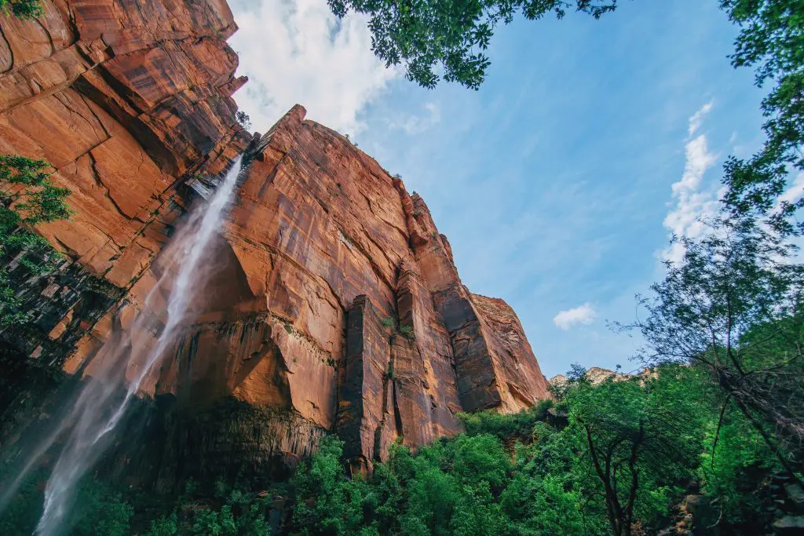

Coastal and Submarine
Processes and Landforms Submarine
My research focus has been on the coastal and submarine
areas of the Sergipe-Alagoas basin, Northeast Brazil,
aiming to study the interactions between river-ocean
incluindo as respostas a variação do nível do mar over do
quaternario tardio.